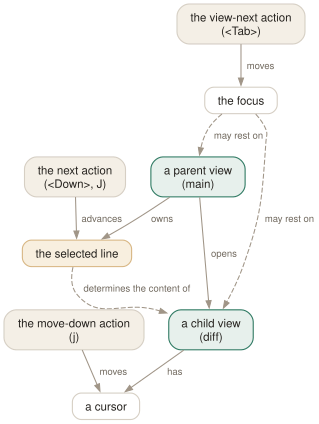

Day 03
Moving between views
Parent and child, the view stack, and why the arrow keys are not j and k.
By the end of today you can
- split the main view against a diff and walk the history without touching the mouse
- predict what the arrow keys do in a split view, and reach for j and k when you do not want that
- get out of any depth on purpose, using q, Q, < and O deliberately
The split is the reason to use tig
Yesterday you opened a diff with d, which replaced the list. Today: press Enter instead. The screen splits, the commit list stays, and the diff below follows your cursor as you walk the history. That one gesture is what tig is for.
Pressing Enter on a commit in the main view gives you this:
┌────────────────────────────────────────────────────────────┐
│ 2026-03-05 Ada Lovelace ●─╮ [master] Merge branch 'feat…' │
│ 2026-03-03 Ada Lovelace │ ∙ [feature/parser] Implement p… │ <- selection
│ 2026-03-02 Ada Lovelace │ ∙ Add parser header │
├────────────────────────────────────────────────────────────┤
│ [main] 785f586… - commit 5 of 8 62% │ <- parent title
├────────────────────────────────────────────────────────────┤
│ commit 785f5861f1d5cd1a8a5d0a2b9c3e4f5a6b7c8d9e │
│ Author: Ada Lovelace <dev@example.com> │
│ --- │
│ src/parser.c | 1 + │
├────────────────────────────────────────────────────────────┤
│ [diff] 785f586… - line 1 of 27 92% │ <- child title
└────────────────────────────────────────────────────────────┘
Two views, each with its own title window. The bottom one gets split-view-height of the display — 67% by default, so the child is roughly twice the parent. Now hold Down: the selection walks the list above and the diff below reloads for each commit.

next (bound to the arrow keys) advances the selection, which belongs to whichever view is focused and drags the child view along with it. move-down (bound to j) moves a cursor inside one view and disturbs nothing.Focus, and the key distinction nobody explains
Tab moves focus between the two views. The focused view is the one whose title is bold, and — more importantly — the one that owns the selection.
This is where the arrow keys get interesting. tig binds them to next and previous, which are context sensitive, and binds j and k to move-down and move-up, which are not:
- Down / J
next. Advance the selection. With focus in the parent, this changes commit and reloads the diff. With focus in the child, it scrolls the child.- j
move-down. Move the focused view's cursor by one line. Never reaches across to the parent, never reloads anything.
In a single unsplit view the two are indistinguishable, which is exactly why the difference ambushes people the first time they split something. The rule worth internalising: arrows move the selection, j and k move a cursor.
Stacked or side by side
Whether the split is horizontal or vertical is vertical-split, which defaults to auto — “it depends on the window dimensions”, per tigrc(5).
The two sizing options are independent: split-view-height governs the bottom view when stacked, split-view-width the right-hand view when side by side. Both accept a row/column count or a percentage, and tig always keeps the smaller view at least four lines or columns.
O maximises the focused view to fill the display, and pressing it in the other view swaps which one you see. It is the fastest way to read a long patch without closing the list you are working through.
Getting out, four ways
Four keys leave a view, and they mean different things:
- q
- Close this view, pop the stack, reveal what is underneath. Quits if it was the last.
- Q
- Quit tig now, from any depth.
- <
- Go back to the previous view state — where you were, not one level up.
- ,
- Move to the parent: the parent directory in the tree view, the parent commit in blame.
< and q look similar and are not. q is structural — it destroys the top view. < is historical — it retraces where you have been, including positions within a view. After Day 8's habit of walking a blame chain backwards through history, < is how you come home.
Today's habit
Stop using d to inspect a commit. Press Enter, leave the split open, and review a branch's worth of history by holding Down. If you review other people's code, do the next review this way and notice how much less you type.
Tomorrow: what the diff view is showing you, and the filter you did not know was on.
New vocabulary
Keys
| Key | Does |
|---|---|
| Enter | Open the selected line. From the main view, splits and shows the diff. |
| Tab | Move focus to the other view in a split. |
| UpDown | Move to the previous/next entry — in the parent view, even from the child. |
| JK | Same as the arrow keys: next and previous entry. |
| O | Maximise the focused view to fill the display. |
| < | Go back to the previous view state. |
| , | Move to the parent: the parent directory, or the parent commit. |
| Space- | Page down and page up. |
| C-dC-u | Half a page down and up. |
Options
| Option | Does |
|---|---|
split-view-height | Height of the bottom view in a stacked split. Default 67%. |
split-view-width | Width of the right-hand view in a side-by-side split. Default 50%. |
vertical-split | Stacked or side by side. Default auto. |
focus-child | Whether opening a child view moves the focus into it. Default yes. |
Drillsdo these in a real terminal, today
Self-check
Answer out loud first, then unfold.
You split the main view against a diff, press Tab into the diff, and now the Down key scrolls the patch instead of moving to the next commit. Your colleague says theirs moves to the next commit from inside the diff. Who is right?
Both, at different times. Down is bound to next, which is context sensitive: it means “next entry in the view that owns the selection”. While the parent still owns the selection, Down walks commits and reloads the diff. Once you Tab into the child, the child owns it and Down scrolls.
If you want the parent-walking behaviour permanently while reading a diff, Day 12's bind diff <Down> move-up family is exactly the knob — tigmanual(7) even suggests it.
What is the difference between j and Down, given that both appear to move down one line?
j is move-down: move this view's cursor one line, and nothing else. Down is next: advance the selection, which in a split view means the parent's cursor and a reload of the child.
In an unsplit view they are indistinguishable, which is why the difference surprises people the first time they split something. J and K are the same as the arrows, for people who do not want to leave the home row.
You press Enter on a commit and the diff opens below, but you wanted it beside. What decides?
vertical-split, which defaults to auto — tig picks based on the terminal's dimensions. In practice on 2.6.1 it picks stacked at ordinary sizes; even a 400-column terminal still stacked in testing.
If you want side by side, ask for it rather than hoping: set vertical-split = yes, with split-view-width (default 50%) controlling the right-hand pane. Day 7 puts it in the file.
You are four views deep and press < instead of q. What is the difference?
q is view-close: it destroys the top view and pops the stack. < is back, which returns to the previous view state — where you were, in the view you were in, including the position.
The distinction shows up when you have navigated within one view: < retraces your steps, q throws the whole screen away. After a , walk up a blame chain (Day 8), < is how you come back down.
Cheat sheet
Navigation, compressed. The top half is the split; the bottom half is getting out.
Enter open the selected line — from main, split and show the diff
Tab move focus between the two views in a split
Down/J next: advance the SELECTION (reloads the child view)
j / k move THIS view's cursor only — never touches the parent
Space - page down / up C-d C-u half a page
O maximise the focused view
q close this view (pops) Q quit from any depth
< back to the previous view state (not one level up)
, parent: parent directory (tree), parent commit (blame)
Everything through Day 03
Keys
| Key | Does |
|---|---|
| m | Open the main view — the one-line-per-commit list. |
| d | Open the diff view for the selected commit. |
| s | Open the status view: the working tree. S does the same. |
| h | Open the help view: every binding that is live right now. |
| q | Close this view and fall back to the one underneath. Quits if it is the last. |
| Q | Quit immediately, however deep the stack. |
| R | Reload the current view by re-running its git command. |
| v | Show the version — and prove which build you are on. |
| z | Stop all background loading. For when you opened a 200,000-commit history. |
| D | Cycle the date column: default, relative, compact, custom, hidden. |
| A | Cycle the author column: full, abbreviated, email, user, hidden. |
| X | Show or hide the abbreviated commit ID column. |
| G | Cycle the graph in the main view: v2, v1, off. |
| F | In the main view, show or hide the ref labels. |
| # | Show or hide line numbers. |
| ~ | Switch the line graphics between ASCII and the drawing characters. |
| o | Open the option menu: the same toggles, with their current values. |
| jk | Move the cursor down and up. Arrow keys work too, with a caveat on Day 3. |
| Enter | Open the selected line. From the main view, splits and shows the diff. |
| Tab | Move focus to the other view in a split. |
| UpDown | Move to the previous/next entry — in the parent view, even from the child. |
| JK | Same as the arrow keys: next and previous entry. |
| O | Maximise the focused view to fill the display. |
| < | Go back to the previous view state. |
| , | Move to the parent: the parent directory, or the parent commit. |
| Space- | Page down and page up. |
| C-dC-u | Half a page down and up. |
Commands
| Command | Does |
|---|---|
tig | Open the main view for the current branch. |
tig status | Start in the status view instead. |
tig -C <path> | Run as if started in path. |
tig -v | Print the version and exit. Also reveals the optional features built in. |
Options
| Option | Does |
|---|---|
show-changes | Whether the working-tree rows appear at all. Default yes. |
show-untracked | Whether the untracked row appears. Default yes. |
reference-format | How refs are wrapped. Default [branch] {remote} <tag> ~replace~. |
split-view-height | Height of the bottom view in a stacked split. Default 67%. |
split-view-width | Width of the right-hand view in a side-by-side split. Default 50%. |
vertical-split | Stacked or side by side. Default auto. |
focus-child | Whether opening a child view moves the focus into it. Default yes. |